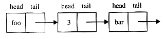
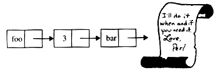

Of course, you can't have an infinite data structure, can you? After all, the computer only has a finite amount of memory. But that doesn't matter. We're all mortal and so we, and our programs, wouldn't really know an infinite data structure if we saw one. All that's really necessary is a data structure that behaves as if it were infinite.
A UNIX pipe is a great example of such an object - think of a pipe that happens to be connected to the standard output of the yes program. From the manual page:
yes prints the command line arguments, separated by spaces and followed by a newline, forever until it is killed.
The output of yes might not be infinite, but it's a credible imitation. So is the output tail -f when applied to your web access log.
In this article I'll demonstrate how to implement a data structure called a stream that behaves as if it were infinite. You can keep pulling data out of this data structure, and it never runs out. Streams can be filtered, just like UNIX data streams can be filtered with grep, and they can be transformed and merged, just like UNIX streams. Programming with streams is a lot like programming with pipelines in the shell - you can construct a simple stream, then transform and filter it to get the stream you really want. If you're used to programming with pipelines, programming with streams will feel very familiar.
As an example of a problem that's easy to solve with streams, we'll look at a classic algorithms problem.
Hamming wanted an efficient algorithm that generates the list of all numbers of the form 2i3j5k for i, j, k at least 0, in ascending order. This list is called the Hamming sequence, and begins like this:
1 2 3 4 5 6 8 9 10 12 15 16 18 ...
Let's say we want compute the first three thousand of these. This problem was popularized by Edsger Dijkstra.
There's an obvious brute force technique: Take the first number you haven't checked yet, divide it by 2's, 3's, and 5's until you can't do that any more, and if you're left with 1, then the number should go on the list. Otherwise throw it away and try the next number. So:
This obvious technique has one problem: it's mind-bogglingly slow. The problem is that most numbers aren't on the list, and you waste an immense amount of time discovering that. Although the numbers at the beginning of the list are pretty close together, the 2,999th number in the list is 278,628,139,008. Even if you had enough time to wait for the brute-force algorithm to check all the numbers up to 278,628,139,008, think how much longer you'd have to wait for it to find the next number in the sequence, which is 278,942,752,080.
It can be surprisingly difficult to solve this problem efficiently with conventional programming techniques. But it turns out to be easy with the techniques we'll explore in this article.
A stream is like the stream that comes out of a garden hose, except that what emerges isn't water but data. Whenever you need another data item, you pull one out of the stream, which produces data on demand forever. The key point is that, unlike a regular array which has all the data items stored away somewhere, the stream computes the data just as they're needed, at the moment your program asks for them. The data never takes any more space or time than necessary. You can't have an array of all the odd integers, because it would have to be infinitely long and consume an infinite amount of memory. But you can have a stream of all the odd integers, and pull as many odd integers out of it as you need, because it only computes the odd numbers one at a time as you ask for them.
We'll return to Hamming's problem a little later, after we've seen streams in more detail.
Unlike a Perl array, a stream can be modeled with a linked list made of nodes. Each node has two parts: The head, which contains a data item, and the tail, which points to the next node in the stream. In Perl, we'll implement this as a hash with two members. If %node is such a hash, then $node{h} will be the head, and $node{t} the tail. The tail will usually be a reference to another such node. A stream will be a linked list of these nodes:

The stream ('foo', 3, 'bar', ...)
We'll be able to assign values to our stream as follows:
$stream->{h} = 'foo';
$stream->{t}{h} = 3;
$stream->{t}{t}{h} = 'bar';
$stream->{t}{t}{t}{h} = ... ;
We still have the problem of how to create an infinite stream, because clearly we can't construct an infinite number of these nodes. But here's the secret: a stream node might not have a tail - that is, it might not have been computed yet. If a stream doesn't have a tail, it has a promise instead. Our stream promises to compute the next node if you ever need the data item that would be in its head:

The "complete" stream ('foo', 3, 'bar', ...)
How can we program a promise? Perl doesn't have promises, right? Here's what a promise to compute an expression looks like:
$promise = sub { EXPRESSION };
Perl doesn't compute the value of the expression right away; instead, it constructs an anonymous function that computes the expression and returns the value when you call it:
$value = &$promise; # Evaluate expression
That's just what we want. When we want to promise something without actually computing it, we'll just wrap it up in an anonymous function, and then when we want to collect on the promise, we'll call the function.
How can we tell when a value is a promise? In our simple examples, we'll just look to see if it's a reference to a function:
if (ref $something eq CODE) { # It's a promise... }
In a real project, we might do something a little more elaborate, like inventing a Promise package with Promise objects, but in this article, we'll just stick with plain vanilla CODE refs.
Here's a simple function that constructs a stream node. It expects two arguments, a head and a tail. The tail should either be either another stream, or a promise to compute one. It then takes the head and the tail, puts them into an anonymous hash with h and t members, and blesses the hash into the Stream package.
package Stream;
sub new {
my ($package, $head, $tail) = @_;
bless { h => $head, t => $tail } => $package;
}
The head() method, which returns the head of a stream, is now easy to implement. We simply return the h member of the hash:
sub head { $_[0]{h} }
The tail() method is a little more complicated because it must cope with two possibilities: If the tail of the stream is another node, tail() can return it right away. But if the tail is a promise, then tail() must collect on the promise and compute the real tail to return.
sub tail {
my $tail = $_[0]{t};
if (ref $tail eq CODE) {
# Collect on the promise
$_[0]{t} = &$tail();
}
$_[0]{t};
}
We also want a notation for an empty stream, or for a stream that has run out of data, in case we want finite streams as well as infinite ones. If a stream is empty, we'll represent it with a node that is missing the usual h and t members, and instead has an e member to show that it's empty. Here's a function to construct an empty stream:
sub empty {
my $pack = shift;
$pack = ref($pack) || $pack || Stream;
bless {e => 'I am empty.'} => $pack;
}
And here's a function that tells you whether a stream is empty or not:
sub is_empty { exists $_[0]{e} }
These functions, and all the other functions in this article, are available at http://www.plover.com/~mjd/perl/Stream.pm and on the web site.
Let's see an example of how to use this. Here is a function that constructs an interesting stream: You give it a reference to a function $f, and a number $n, and it constructs the stream of all numbers of the form f(n), f(n+1), f(n+2), ...
sub tabulate {
my $f = shift;
my $n = shift;
Stream->new(&$f($n), sub { &tabulate($f, $n+1) })
}
How does it work? The first element of the stream is just f(n), which in Perl notation is &$f($n).
Rather than computing all the rest of the elements of the table (there are an infinite number of them, after all) this function promises to compute more if we want them. The promise is:
sub { &tabulate($f, $n+1) }
When invoked, this calls tabulate() again, to compute all the values from $n+1 on up. Of course, it won't really compute all the values from $n+1 on up; it'll just compute f(n+1), and give back a promise to compute f(n+2) and the rest if they're needed.
Here's an example:
sub square { $_[0] * ${0] }
$squares = &tabulate( \&square, 1);
The show utility, supplied in Stream.pm, prints out the first few elements of a stream - the first ten, if you don't say otherwise. $squares->show prints 1 4 9 16 25 36 49 64 81 100.
Let's add a little debugging to tabulate() so we can see better what's going on. This version of tabulate() is the same as the one above, except that it prints an extra line of output just before it calls the function f():
sub tabulate {
my $f = shift;
my $n = shift;
print STDERR "-- Computing f($n)\n"; # For debugging
Stream->new(&$f($n),
sub { &tabulate($f, $n+1) }
)
}
$squares = &tabulate( \&square, 1);
-- Computing f(1)
$squares->show(5);
1 -- Computing f(2)
4 -- Computing f(3)
9 -- Computing f(4)
16 -- Computing f(5)
25 -- Computing f(6)
$squares->show(6);
1 4 9 16 25 36 -- Computing f(7)
$squares->show(5);
1 4 9 16 25
Something interesting happened with show(6) up there - the stream object called the tabulate() function only once, to compute the square of 7. The other 6 elements had already been computed and saved, so it didn't need to compute them again. Similarly, the second time we executed show(5), the program didn't need to call tabulate() at all; it had already computed and saved the first five squares, so it just printed them out. Saving computed function values in this way is called memoization.
Someday, we could come along and try $squares->show(1_000_000_000);
and the stream would compute 999,999,993 squares for us, but until we ask for them, it won't. That saves space and time, and is called lazy evaluation.
To solve Hamming's problem, we need only one more tool, called merge(), a function that takes two streams of numbers in ascending order and merges them together into one stream of numbers in ascending order, eliminating duplicates. For example, merging
1 3 5 7 9 11 13 15 17 ...
with
1 4 9 16 25 36 ...
yields
1 3 4 5 7 9 11 13 15 16 17 19 ...
sub merge {
my $s1 = shift;
my $s2 = shift;
return $s2 if $s1->is_empty;
return $s1 if $s2->is_empty;
my $h1 = $s1->head;
my $h2 = $s2->head;
if ($h1 > $h2) {
Stream->new($h2, sub { &merge($s1, $s2->tail) })
} elsif ($h1 < $h2) {
Stream->new($h1, sub { &merge($s1->tail, $s2) })
} else { # heads are equal
Stream->new($h1, sub { &merge($s1->tail, $s2->tail) })
}
}
Now we have enough tools to solve Hamming's problem.We know that the first element of the Hamming sequence is 1. That's easy. The rest of the sequence is made up of multiples of 2, multiples of 3, and multiples of 5.
Let's think about the multiples of 2 for a minute. Here's the Hamming sequence, with multiples of 2 in bold:
1 2 3 4 5 6 8 9 10 12 15 16 18 ...
Now here's the Hamming sequence again, with every element multiplied by 2:
2 4 6 8 10 12 16 18 20 24 30 32 36 ...
Notice how the second row of numbers contains all of the bold numbers from the first row - If a number is even, and it's a Hamming number, then it's two times some other Hamming number. That means that if we had the Hamming sequence hanging around, we could multiply every number in it by 2, and that would give us all the even Hamming numbers. We could do the same thing with 3 and 5 instead of 2. By multiplying the Hamming sequence by 2, by 3, and by 5, and merging those three sequences together, we'd get a sequence that contained all the Hamming numbers that were multiples of 2, 3, and 5. That's all of them, except for 1, which we could just tack on the front. This is how we'll solve our problem.
Let's build a function that takes a stream and multiplies every element in it by a constant:
# Multiply every number in a stream $self
# by a constant factor $n
sub scale {
my $self = shift;
my $n = shift;
return &empty if $self->is_empty;
Stream->new($self->head * $n,
sub { $self->tail->scale($n) });
}
Here's the solution to the Hamming sequence problem: We use scale() to scale the Hamming sequence by 2, by 3, and by 5, merge those three streams together, and finally tack a 1 on the front.
# Construct the stream of Hamming's numbers.
1 sub hamming {
2 my $href = \1; # Dummy reference
3 my $hamming = Stream->new(
4 1,
5 sub { &merge($$href->scale(2),
6 &merge($$href->scale(3),
7 $$href->scale(5))) });
8 $href = \$hamming; # No longer dummy
9 $hamming;
10 }
Line 2 creates $href, a reference to the scalar 1. We're not interested in the 1, but we need a reference around to refer to $hamming so that we can include it in the calls to merge(). After we've defined the anonymous subroutine (lines 5-7) which uses $href, we pull a switcheroo and make $href refer to our stream $hamming (line 8) instead of the irrelevant 1. hamming() works, and it's efficient:
&hamming()->show(20); 1 2 3 4 5 6 8 9 10 12 15 16 18 20 24 25 30 32 36 40
It only takes a few minutes to compute three thousand Hamming numbers, even on my dinky 75 megahertz Pentium.
We could make this more efficient by fixing up merge() to merge three streams instead of two, but that's left as an exercise for Our Most Assiduous Reader.
The great thing about streams is that you can treat them as sources of data, and you can compute with these sources by merging and filtering data streams. This is called a dataflow paradigm. If you're a UNIX programmer, you're probably already familiar with dataflow, because programming with pipelines in the shell is similar.
Here's an example of a function, filter(), that accepts one stream as an argument, filters out all the elements from it that we don't want, and returns a stream of the elements we do want - it does for streams what the UNIX grep program does for pipes, or what the Perl grep() function does for lists.
filter()'s second argument is a predicate() function that is applied to each element of the stream, returning true if that element should be left in the stream or false if it is to be discarded.
# Return a stream on only the interesting elements of $arg.
sub filter {
my $stream = shift;
# Second argument is a predicate function that returns
# true only when passed an interesting element of $stream.
my $predicate = shift;
# Look for next interesting element
until ($stream->is_empty || &$predicate($stream->head)) {
$stream = $stream->tail;
}
# If we ran out of stream, return the empty stream.
return &empty if $stream->is_empty;
# Construct new stream with the interesting element at
# its head and the rest of the stream, appropriately
# filtered, at its tail.
Stream->new($stream->head,
sub { $stream->tail->filter($predicate) }
);
}
Let's find perfect squares that are multiples of 5:
sub is_multiple_of_5 { $_[0] % 5 == 0 }
$squares->filter(\&is_multiple_of_5)->show(6);
25 100 225 400 625 900
You could do all sorts of clever things with this:
Here's a particularly clever application - using filtering to compute a stream of prime numbers.
sub prime_filter {
my $s = shift;
my $h = $s->head;
Stream->new($h, sub { $s->tail
->filter(sub { $_[0] % $h })
->prime_filter()
});
}
To use this, you apply it to the stream of integers starting at 2:
2 3 4 5 6 7 8 9 ...
The first thing it does is to pull the 2 off the front and return it. It then filters the tail of the stream and throws away all the elements that are divisible by 2. It gets the next available element, 3, and returns that, filtering the rest of the stream (which was already missing the even numbers) to throw away the elements that are divisible by 3. Then it pulls the next element, 5, off the front...and so on.
If we're going to have fun with this, we need to start it off with the integers beginning at 2:
$iota2 = &tabulate(sub {$_[0]}, 2);
$iota2->show;
2 3 4 5 6 7 8 9 10 11
$primes = $iota2->prime_filter
$primes->show;
2 3 5 7 11 13 17 19 23 29
This is the Sieve of Eratosthenes. It's not the best algorithm for computing primes, but at 2300 years of age it's the oldest.
There are a very few basic tools that we need to make good use of streams. filter() was one; it filters uninteresting elements out of a stream. Similarly, transform() takes one stream and turns it into another. If you think of filter() as a stream version of Perl's grep() function, you should think of transform() as the stream version of Perl's map() function:
sub transform {
my $self = shift;
return &empty if $self->is_empty;
my $map_function = shift;
Stream->new(&$map_function($self->head),
sub { $self->tail->transform($map_function) }
);
}
If we'd known about transform() when we wrote hamming() above, we would never have built a separate scale() function; instead of $s->scale(2) we might have written $s->transform(sub { $_[0] * 2 }).
$squares->transform(sub { $_[0] * 2 })->show(5)
2 8 18 32 50
We'll see a better use of this a little further down.
Here are a couple of very Perlish streams:
# Stream of key-value pairs in a hash
sub eachpair {
my $hr = shift;
my @pair = each %$hr;
if (@pair) {
Stream->new([@pair], sub {&eachpair($hr)});
} else { # There aren't any more
∅
}
}
# Stream of input lines from a filehandle
sub input {
my $fh = shift;
my $line = <$fh>;
if ($line eq '') {
∅
} else {
Stream->new($line, sub {&input($fh)});
}
}
# Get first 3 lines of standard input that contain 'hello'
@hellos = &input(STDIN)->filter(sub {$_[0] =~ /hello/i})->take(3);
iterate() takes a function and applies it to an argument, then applies the function to the result, then the new result, and so on:
# compute n, f(n), f(f(n)), f(f(f(n))), ...
sub iterate {
my $f = shift;
my $n = shift;
Stream->new($n, sub { &iterate($f, &$f($n)) });
}
One use for iterate() is to build a stream of pseudo-random numbers:
# This is the RNG from the ANSI C standard
sub next_rand {
int(($_[0] * 1103515245 + 12345) / 65536) % 32768
}
sub rand {
my $seed = shift;
&iterate(\&next_rand, &next_rand($seed));
}
&rand(1)->show;
16838 14666 10953 11665 7451 26316 27974 27550 31532 5572
&rand(1)->show;
16838 14666 10953 11665 7451 26316 27974 27550 31532 5572
&rand(time)->show
28034 22040 18672 28664 13341 15205 10064 17387 18320 32588
&rand(time)->show
13922 629 7230 7835 4162 23047 1022 5549 14194 25896
Some people in comp.lang.perl.misc have pointed out that Perl's built-in random number generator doesn't have a good interface - it's supposed to be seeded only once, but there's no way for two modules written by different authors to agree on which one should provide the seed. Also, two or more independent modules drawing random numbers from the same source may reduce the randomness of the numbers that each of them gets. But with random numbers from streams, you can manufacture as many independent random number generators as you want, and each part of your program can have its own supply, and use it without interfering with the random numbers generated by other parts of your program. Suppose you want random numbers between 1 and 10 only. Just use transform():
$rand = &rand(time)->transform(sub {$_[0] % 10 + 1});
$rand->show(20);
1 5 8 2 8 10 4 7 3 10 3 6 3 8 8 9 7 7 8 8
Of course, if we $rand->show(20) again, we'll get exactly the same numbers. There are an infinite number of random numbers in $rand, but the first 20 are always the same. We can get to some fresh elements with drop(): $rand = $rand->drop(10); This is such a common operation that we have a shorthand for it: $rand->discard(10).
We can also use iterate() to investigate the hailstone numbers, which star in a famous unsolved mathematical problem called the Collatz conjecture. Start with any integer. If it's odd, multiply it by 3 and add 1; if it's even, divide it by 2. Repeat forever. Depending on where you start, one of three things will happen:
The unsolved question is: Are there any numbers that don't fall into the 4-2-1 loop?
# Next number in hailstone sequence
sub next_hail {
my $n = shift;
($n % 2 == 0) ? $n/2 : 3*$n + 1;
}
# Hailstone sequence starting with $n
sub hailstones {
my $n = shift;
&iterate(\&next_hail, $n);
}
&hailstones(15)->show(23);
15 46 23 70 35 106 53 160 80 40 20 10 5 16 8 4 2 1 4 2 1 4 2
iterate_chop() takes the infinite stream produced by iterate() and chops off the tail before the sequence starts to repeat.
&hailstones(15)->iterate_chop->show(ALL); 15 46 23 70 35 106 53 160 80 40 20 10 5 16 8 4 2
By counting the length of the resulting stream, we can see how long it took the hailstone sequence to start repeating:
print &hailstones(15)->iterate_chop->length; 17
Of course, you need to be careful not to ask for the length of an infinite stream!
You could have solved all of the problems in this article without streams, but it was simpler to express them in terms of filtering and merging. Streams provide a convenient notation for powerful dataflow ideas, and you can apply your experience to programming UNIX shell pipelines.
These techniques of memoization and lazy evaluation can be applied to almost any problem or data structure. For example, if you were writing a chess program, you could build a lazy move tree structure (the first row contains all of your possible moves, the second row contains all of your opponent's responses to each of those moves, the third row contains your counterresponses, and so on) analogous to the lazy lists in this article, and expand the tree only when necessary.
The implementation of streams in Stream.pm is wasteful of space and time because it uses an entire two-element hash to store each element of the stream, and because finding the nth element of a stream requires following a chain of n references. A better implementation would cache all the memoized stream elements in a single array where they could be accessed conveniently. Our Most Assiduous Reader might like to construct such an implementation.
A better programming interface for streams would be to tie() the Stream package to an array so that the stream would seem like a normal Perl array. Unfortunately, as the perltie documentation says, "WARNING: Tied arrays are incomplete."
_ _END_ _
ML for the Working Programmer. L.C. Paulson, Cambridge University Press, 1991, pp. 166-185.
Structure and Interpretation of Computer Programs. Harold Abelson and Gerald Jay Sussman, MIT Press, 1985, pp. 242-286.
_ _END_ _